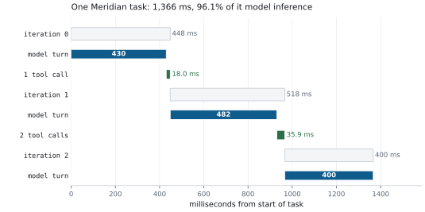

Measuring MCP Applications
Brand’s point was not that one number is enough. It was that an argument conducted in adjectives cannot be settled, and an argument conducted in numbers can. Everyone in that room had been scouting on instinct for thirty years and each of them was certain.
This is the chapter the book was written for. Everything before it was mechanism. Everything after it is optimisation, and optimisation without measurement is superstition with a build pipeline.
The metrics that matter
Nine. Not twenty, because a dashboard nobody reads is a dashboard that does not exist.
| Metric | Why | Meridian |
| Time to first token | What the user feels as “is it working” | 340 ms |
| Loop iterations per task | The unit that actually costs money | 3 |
| Round trips per task | Tool calls plus MRTR retries | 3 |
| Loop latency, decomposed | Model, transport, execution, consent | see below |
| Tool-selection accuracy | Catalogue health | eval-only |
| Call success rate | Server health, split by error kind | |
| Context utilisation | Tokens used against the window | 4,009 |
| Cache hit rate | Whether you honour ttlMs |
96.2 % |
| Cost per task | The number finance will eventually ask about | $0.0125 |
Two of these are unusual enough to justify.
Loop iterations per task rather than requests per second. Requests per second is a server metric and it will look wonderful while your users wait eight seconds, because the expensive part is not the request.
Tool-selection accuracy needs an eval to measure, so most people skip it. Do not. It is the leading indicator of catalogue rot, and it degrades slowly enough that nobody notices from the inside.
Decomposing the loop
The single most useful thing in this chapter.
@dataclass
class Iteration:
"""One trip round the loop, with the milliseconds attributed."""
index: int
model_ms: float = 0.0
transport_ms: float = 0.0
consent_ms: float = 0.0
tool_calls: int = 0
parallel: bool = False
input_tokens: int = 0
output_tokens: int = 0
cost_usd: float = 0.0Four bands, and every millisecond belongs to exactly one. If you cannot say which band a millisecond went to, that is the bug: not a slow system, an unmeasurable one.

Read that figure like a trace, because that is what it is.
Three iterations, and iteration 2 does no tool calls at all. It exists so the model can read iteration 1’s results and say it is finished, and it costs 400 ms.
The two tool bands are 18.0 ms and 35.9 ms. Together, 3.9 % of the task.
Iteration 1’s two calls ran serially here. In parallel they cost 19.5 ms instead of 35.9.
The subtraction that isolates transport
From Chapter 3, and worth restating as a technique:
The control still serialises and deserialises, so what remains after the subtraction is transport mechanics and nothing else. That is the only honest way to answer “is my server slow or is my transport slow”, and it takes ten minutes to set up.
Distributed tracing, done properly
Here is where MCP gives you something genuinely nice.
traceparent, tracestate, and baggage are reserved _meta keys, carved out as an explicit exception to the reverse-DNS prefix rule specifically so W3C Trace Context works unchanged.
{
"jsonrpc": "2.0",
"id": 2,
"method": "tools/call",
"params": {
"name": "assess_account_risk",
"arguments": { "accountId": "ACC-1042" },
"_meta": {
"io.modelcontextprotocol/protocolVersion": "2026-07-28",
"io.modelcontextprotocol/clientCapabilities": {},
"traceparent": "00-0af7651916cd43dd8448eb211c80319c-00f067aa0ba902b7-01"
}
}
}Client side it is one argument:
body["_meta"] = build_request_meta(
self.capabilities, self.info,
protocol_version=self.protocol_version,
progress_token=progress_token,
traceparent=traceparent,
)Server side it lands on the context, ready to become a span parent:
return RequestContext(
...
traceparent=meta.get(KEY_TRACEPARENT),
tracestate=meta.get(KEY_TRACESTATE),
baggage=meta.get(KEY_BAGGAGE),
)That is the whole integration. Your existing OpenTelemetry backend now shows host-to-server spans without knowing what MCP is.
The span hierarchy worth building
task [ 1,366 ms]
|- iteration 0 [ 447 ms]
| |- model.generate [ 430 ms]
| `- tool.risk.assess_account_risk [ 18 ms]
| |- transport.http [ 4 ms]
| `- server.execute [ 13 ms]
|- iteration 1 [ 518 ms]
| |- model.generate [ 482 ms]
| |- tool.fraud.screen_account [ 18 ms]
| `- tool.marketdata.get_curve [ 17 ms]
`- iteration 2 [ 400 ms]
`- model.generate [ 400 ms]Three properties make this worth the effort:
Iterations are spans. Not just tool calls. Otherwise your trace shows 54 ms of activity inside a 1,366 ms task and a 1,312 ms hole nobody can explain.
Transport and execution are separate spans. That is the subtraction above, done automatically for every call rather than once in a benchmark.
Sibling spans that overlap in time reveal parallelism. If you fanned out, the trace shows it. If you thought you fanned out and did not, the trace shows that too, which is more useful.
Instrumenting a server
Meridian keeps deliberately crude built-in counters, because something is enormously better than nothing and it costs four lines:
finally:
elapsed = (time.perf_counter() - started) * 1000.0
self.call_count[method] = self.call_count.get(method, 0) + 1
self.total_ms[method] = self.total_ms.get(method, 0.0) + elapseddef stats(self) -> dict:
return {
"calls": dict(self.call_count),
"meanMs": {
m: round(self.total_ms[m] / self.call_count[m], 3)
for m in self.call_count if self.call_count[m]
},
}Means are a lie, of course. What you actually want is percentiles, because the p99 is what your users complain about and the mean is what hides it. The client keeps those:
def percentile(self, p: float) -> float:
if not self.latency_ms:
return 0.0
ordered = sorted(self.latency_ms)
idx = min(len(ordered) - 1, int(round((p / 100.0) * (len(ordered) - 1))))
return ordered[idx]Instrumenting the client
@dataclass
class CallStats:
"""The counters Chapter 16 turns into a dashboard."""
requests: int = 0
mrtr_rounds: int = 0
retries: int = 0
errors: int = 0
bytes_sent: int = 0
bytes_received: int = 0
latency_ms: list[float] = field(default_factory=list)Three of these are worth more attention than they usually get.
mrtr_rounds is extra round trips forced by servers asking questions, at roughly 375 ms each (Chapter 8). Chapter 12 called it the early warning for a missing schema field; on a dashboard it is also the fastest way to attribute a latency regression to a specific server deploy.
bytes_sent against bytes_received tells you whether your requests or your responses are the problem. Meridian sends a 320-byte request and receives 5,856 bytes for a tools/list. Requests are never the issue; catalogues frequently are.
errors, split by kind. Protocol errors and tool execution errors have completely different meanings. Protocol errors are bugs. Tool execution errors are normal operation, and a rate of zero means your validation is happening somewhere it should not be.
Cache metrics
@dataclass
class CacheStats:
hits: int = 0
misses: int = 0
stale: int = 0
invalidations: int = 0
stores: int = 0
uncacheable: int = 0Six counters, and the split between misses and stale is the one that pays.
High
misses: you are seeing new things. Cold cache, or key cardinality is higher than you thought.High
stale: TTLs are too short for your access pattern. This is tunable and usually free.High
invalidations: the underlying data really is changing. Nothing to fix, but it explains the hit rate.High
uncacheable: you are calling uncacheable methods, or making MRTR retries. Expected fortools/call; suspicious for anything else.
A hit rate alone cannot distinguish “TTL too short” from “data genuinely volatile”, and those have opposite fixes.
Token and cost accounting
def estimate_tokens(text: str) -> int:
return max(1, round(len(text) / CHARS_PER_TOKEN))
def estimate_cost_usd(input_tokens: int, output_tokens: int) -> float:
return (input_tokens * INPUT_USD_PER_MTOK / 1_000_000.0
+ output_tokens * OUTPUT_USD_PER_MTOK / 1_000_000.0)The character-based estimator is wrong in the third decimal place and right enough to compare a before against an after, which is what it is for. Your provider reports exact counts; use those in production and the estimator when you need a number before you have spent the money.
Input climbs, output does not, and iteration 2 is the most expensive despite doing the least. That is the economics of agent loops in one table.
Catalogue cost as a first-class metric
def catalogue_tokens(self) -> int:
return sum(
estimate_tokens(f"{t.get('name','')}{t.get('description','')}"
f"{t.get('inputSchema','')}{t.get('outputSchema','')}")
for t in self.catalogue())Put this on a dashboard. It changes whenever anybody adds a tool to any connected server, it is charged on every turn of every task, and nobody notices it climbing until it is 12,000 and the model has started guessing.
Evals as regression tests
The four numbers to track per release:
| Number | Regression means | Gate |
| Task success rate | Something broke behaviourally | no drop > 3 points |
| Iterations per task | The model needs more turns for the same work | no rise > 10 % |
| Tokens per task | Context or catalogue grew | no rise > 10 % |
| Cost per task | All of the above, monetised | no rise > 10 % |
Catching capability drift is the real prize here. The model provider ships a new version. Your tests pass, because they use a stub. Your evals show iterations per task moved from 3.0 to 3.4, which is a 13 % cost increase nobody would have seen otherwise.
A dashboard worth having
MERIDIAN last 24h
TASKS
completed 14,204 +2.1%
p50 wall clock 1,412 ms +0.3%
p95 wall clock 3,890 ms +8.2% <-- look here
iterations per task (mean) 3.14 +0.1%
cost per task $0.0131 +4.8%
PROTOCOL
round trips per task 3.21 +6.9% <-- and here
mrtr rounds per task 0.19 +58.0% <-- and here
cache hit rate 94.1% -2.1pt
SERVERS calls p95 errors
risk 28,401 14 ms 0.02%
compliance 9,120 31 ms 0.11%
fraud 27,880 8 ms 0.00%
marketdata 31,004 3 ms 0.00%Read the arrows together and the story writes itself. MRTR rounds up 58 %, round trips up 6.9 %, p95 up 8.2 %, cost up 4.8 %. Somebody deployed a server that started asking for something it used to infer, and everything downstream is a consequence.
That diagnosis takes ten seconds with these numbers and a week without them.
Alerting
Four alerts. Chapter 18 adds the operational ones; these are the protocol ones.
| Alert | Condition | Usually means |
| Iteration inflation | Iterations per task up > 20 % | Tool or prompt change |
| Catalogue bloat | Catalogue tokens up > 25 % | Somebody added tools |
| Cache collapse | Hit rate down > 15 points | TTLs changed, or ordering went unstable |
| MRTR surge | MRTR rounds per task doubled | A server started asking |
The harness
Meridian’s measurement rig, and the shape is worth copying whatever you build.
def time_it(fn, *, n: int = 200, warmup: int = 20, label: str = "") -> Timing:
for _ in range(warmup):
fn()
timing = Timing(label)
for _ in range(n):
started = time.perf_counter()
fn()
timing.add((time.perf_counter() - started) * 1000.0)
return timingWarmup matters more than people expect. The first calls pay import costs, JIT warmup, connection setup, and cold caches, and including them turns a distribution into a bimodal mess.
Eight scenarios, each answering one question:
| Scenario | Question |
transport |
What does each transport cost, minus execution? |
coldstart |
Spawn per call, or warm pool? |
catalogue |
What does catalogue bloat cost per turn? |
cache |
What is honouring ttlMs worth? |
fanout |
What does parallelism buy, at what latency? |
mrtr |
What does one elicitation really cost? |
loop |
Where does a whole task’s time go? |
serialisation |
How much of a request is envelope? |
make bench # everything, print a table
python3 -m meridian.bench.run cache fanout # named scenarios
python3 -m meridian.bench.run --json out.jsonTwo things a harness must be honest about
State what is simulated. Meridian’s model latency is drawn from a stated distribution and its docstring says so in the first paragraph. A harness that quietly models something is generating fiction with error bars.
State the machine. Absolute numbers do not transfer. Ratios do.
def machine() -> dict:
return {
"python": platform.python_version(),
"platform": platform.platform(),
"machine": platform.machine(),
"processor": platform.processor() or platform.machine(),
}What to remember
Nine metrics. If you take three: iterations per task, cost per task, cache hit rate.
Decompose every iteration into model, transport, execution, and consent. Every millisecond belongs to one band.
Subtract an in-process control to isolate transport from execution.
traceparentin_metais one line and gives you real distributed traces.Make iterations spans, not just tool calls, or your trace has a hole where 96 % of the time went.
Report percentiles. Means hide the users who are suffering.
Split cache misses from staleness. They have opposite fixes.
Track catalogue tokens on a dashboard. It grows silently.
Gate evals on movement against the last release, not on absolute thresholds.
Warm up before timing, state what is simulated, and state the machine.
Next: spending the measurements.